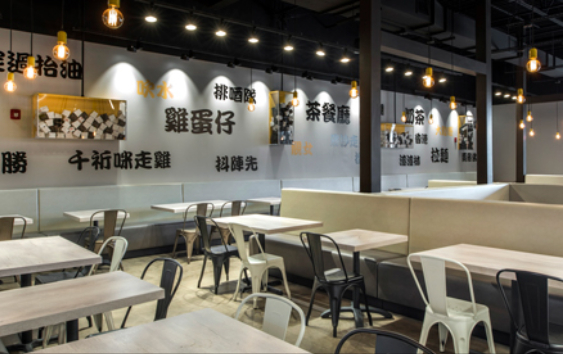

Open Rice
Welcome to Open Rice!
- Open Rice is a Chinese restaurant in Charlotte that provides authentic Chinese dishes. Some of which includes beef chow fun, a type of stir-fry dish. Along with many other dishes that are sure to please anyone who loves Chinese food. The design interiors are also very modern and flow very well into the new age time. There are currently two locations which include Ballantyne and Mid Town Metropolitan. If you're in the mood for Chinese food, Open Rice is a great option to stop at.